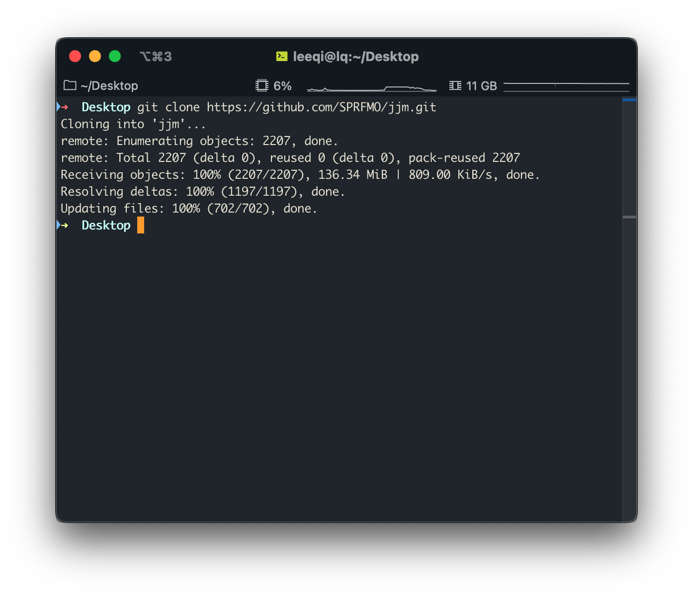

Preparation
(Workshop from June 2022 conducted by Lee Qi at the University of Washington)
Workshop Overview
The main goal of this workshop is to broaden the expertise of the participants in running and understanding the jack mackerel assessment model. The workshop will involve a combination of presentations and hands-on exercises. There will be optional exercises for participants to work on in their own time, and time will be set aside during the workshop for questions about them. Some competency in the R language will be helpful, but help will be provided as requested.
By the end of the workshop, participants should be able to:
- Know how the data are processed prior to inclusion in the assessment
- Have the technical capabilities to run the asssessment in different configurations, under scenarios with different data and/or model assumptions
- Understand the assessment process and know where to find the necessary components of it
- Be able to pull output from model runs to create custom model diagnostics
- Identify areas of improvement for the technical aspects of the assessment process
Workshop Logistics
Prior to the start of the workshop, it is expected that you will have:
- Filled out the pre-workshop survey
- Read through the most recent Technical Annex
- Have a Github account with access to the JJM Github repository
- Please contact Jim Ianelli (jim.ianelli@gmail.com) if you cannot access this site
- Have access to the SPRFMO SC 10 Teams site
- Please contact Susana Delgado (sdelgado@sprfmo.int ) if you don’t have access to this
- Installed R
- Installed a text editor of your choice. For example:
- Optional: Installed AD Model Builder
- For more advanced users
Github Instructions
Largely adapted from a SPRFMO document and Dan Ovando’s tutorial.
Github is a web-based hosting service for software development projects. It allows the SC to share code and results under version control, and facilitates collaboration. The full suite of files and folders required to run the jack mackerel assessment are stored in a single repository.
The repository is stored online, on a cloud. Any updates or changes to the files within the repository can be commited and pushed directly onto the cloud. While you can make changes to the files via the web interface, you will need to download the repository to your local machine in order to run the jack mackerel assessment.
There are two ways for you to copy the repository from the cloud onto your local machine.
Cloning the repository (recommended)
Cloning the repository offers the benefit of version control, and allows you to continuously update the repository in a convenient manner. Changes made to the virtual repository can be pulled to your local machine, while changes made to your local repository can be pushed to the virtual one. That way, work can be shared. Note that changes you make on your local machine will remain local unless you choose to push it to the virtual repository.
If you do not feel that you will need use the files beyond this workshop, feel free to use the second option below to directly download the entire repository. Otherwise, I would recommend cloning it. There are several applications that will allow you to do so (e.g. GitHub Desktop, GitKraken, or Sublime Merge, but I will just outline two methods here. The general steps should be the same, however.
Before we start, you will need to make sure that Git is installed on your system. Installation instructions are found here.
Via RStudio (easier)
File > New Project > Version Control > Git
Repository URL: https://github.com/SPRFMO/jjm.git
Project directory name: jjm (or whatever you want your folder to be named)
Create project as subdirectory of: NAMEOFYOURDIRECTORY (whatever folder you want to store the assessment in)
The JJM repository can now be found in
NAMEOFYOURDIRECTORY/jjm
Via the Command Line
Navigate to the JJM Github repository
Open up a Command (Windows) or Terminal (Mac) window from your applications. If you’re using Linux, I assume you’ll be familiar with this procedure.
Navigate to your chosen working directory using
cd NAMEOFYOURDIRECTORY- For example, you could choose
cd C:\Documents\SPRFMO(Windows) orcd /Users/myname/Documents/SPRFMO - Note: If you have a space in your file path, make sure to insert
\before the space. E.g./Name\ of\ directory
- For example, you could choose
Clone the JJM repository to your local machine with
git clone https://github.com/SPRFMO/jjm.gitThe JJM repository can now be found in
NAMEOFYOURDIRECTORY/jjm

When you’re done
At the end of this process, you should have a repository containing five folders, including:
- assessment
- catch
- cpue
- docs
- src
Workshop participants are encouraged to explore this repository and familiarise themselves with its general structure. In particular, we will be spending a lot of time in the assessment folder.
Downloading the repository as a ZIP file (easier)
Downloading the repository as a ZIP file gives you a snapshot of the repository at the time of the download. You will not have version control, and any changes you make will remain on your local machine.
- Navigate to the jjm repository
- In the top right hand corner, select the green
Codebutton - Select
Download ZIP - Unzip the downloaded file
R Instructions
R is a free language and software programme used largely for statistical computing and graphics. While not strictly required to run the jack mackerel assessment model, R is used to analyse the model outputs and create plots for diagnostics and result presentation. Currently, most of the plots found in the technical annex are produced using the jjmR package.
The jjmR package was adapted from the jjmTools package developed by scientists at IMARPE. The package contains many useful functions for the assessment process, and will form the basis for most of this workshop.
Even if you’ve previously installed jjmR, please go through this process again to ensure that you have the most updated version of the package.
To install the package:
You can copy and paste the code from below into the R console to do so.
install.packages("devtools")
devtools::install_github("SPRFMO/jjmR")Running jjmR
- Open R (or RStudio) from your applications
- Navigate to the
asssessmentfolder within thejjmrepository - Read in the SC09 assessment
- Make a Kobe plot based on the assessment results
You can copy and paste the code from below into the R console to do so.
setwd("NAMEOFYOURDIRECTORY/jjm/assessment") # Make sure to keep the quotation marks!
h1.mod <- jjmR::readJJM("h1_1.00", path = "config", input = "input")
jjmR::kobe(h1.mod)If everything is installed correctly, you should see this Kobe plot. If not, please take note of any errors and ask about them.
ADMB Instructions (for advanced users only)
The jack mackerel assessment model is implemented in AD Model Builder. The code for the model structure (jjms.tpl) can be found in the src folder of the jjm repo, or here. This code is compiled into an executable file that will be stored somewhere on the Teams page. With those executable files, you will not have to install ADMB for most assessment runs and sensitivity analyses.
However, if you would like to make changes to the model’s structure in the source code, you will need ADMB to re-compile the executable file for your own use.
Instructions for ADMB installation can be found here.
To compile the jjms executable:
- Open a command window
- Check that
admbis properly installed by runningadmb --version - Navigate to your jjm/src directory with
cd NAMEOFYOURDIRECTORY/jjm/src - Run either
make jjmsoradmb jjms
We will (most likely) not be spending a lot of time on this aspect of the assesssment process during the workshop. Should you be interested in learning more, please reach out!
Questions?
Please feel free to email Lee Qi at leeqi@uw.edu with any questions, errors, or concerns. I’d be happy to walk you through this document!